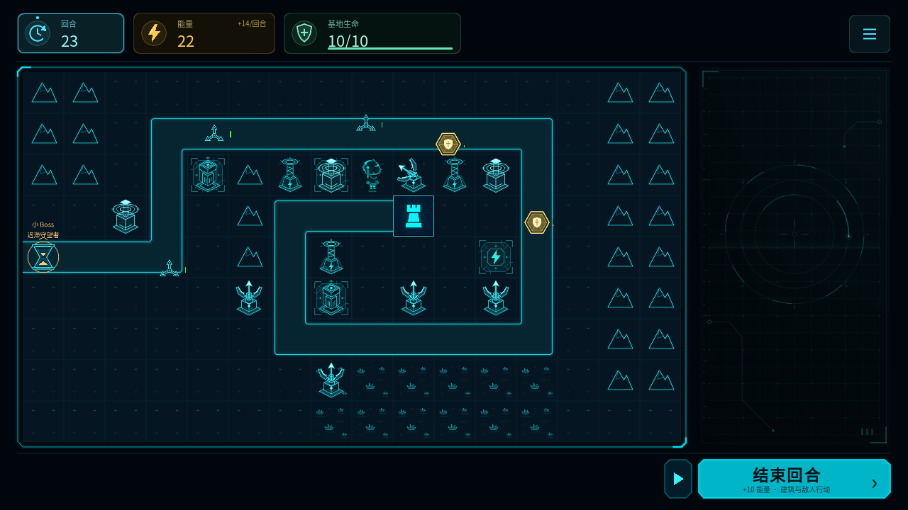
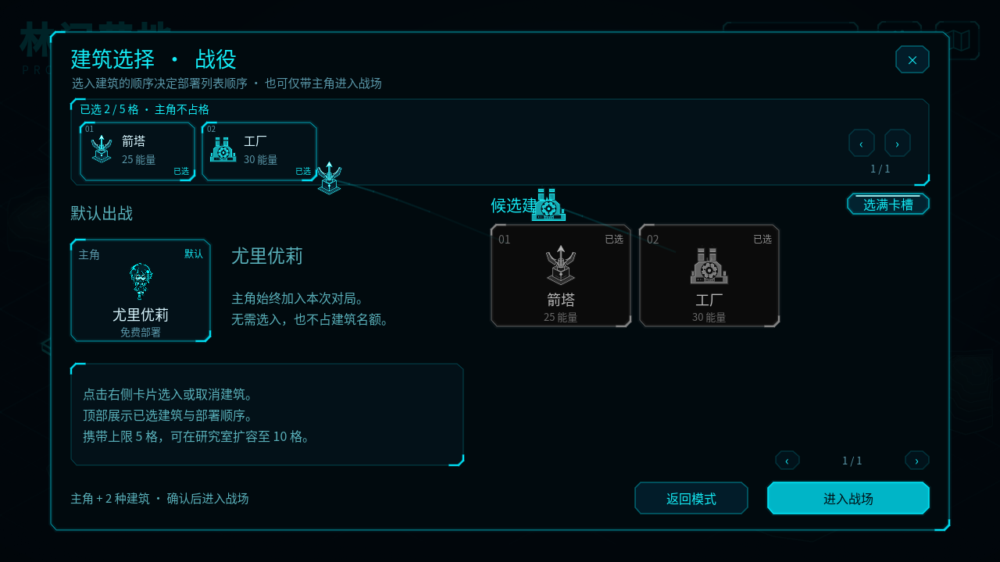
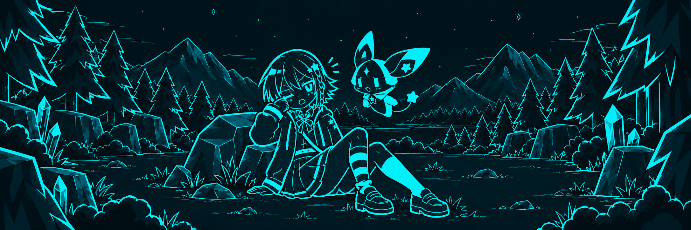
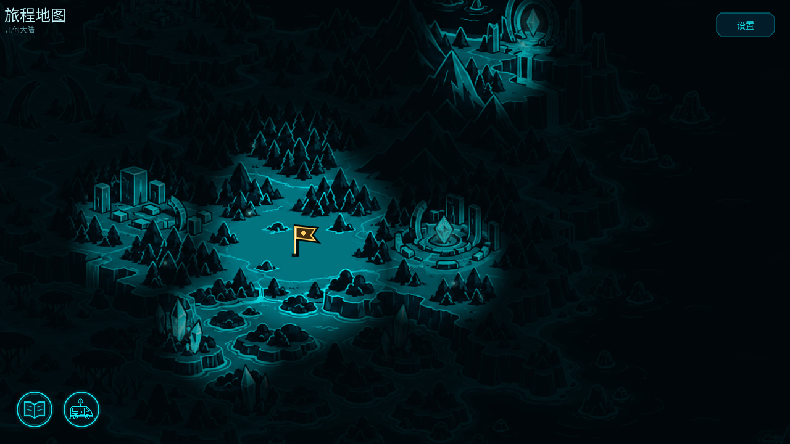

先看敌人从哪里来、会经过哪些格子，再把建筑放到能打到它们的位置。建造和升级都要花能量，补火力时也得给后面几轮留一点。
01 / 玩法
先看路线，再放建筑。
每轮先结算建筑的攻击和产能，
再由敌人移动、攻击。

查看大图
01/03
有的敌人会突进，有的替同伴挡伤害，还有的负责修复。第一次碰见新类型时，可以打开情报查看能力，再决定怎么应对。
普通战役可以慢慢想，准备好再继续。教学结束后的关卡也能开启自动回合；挑战模式则一直自动推进，建造等操作要等到下一回合才执行。
按下「结束回合」之后
普通战役的回合顺序- 01
先做好准备
查看敌人情报，建造或升级建筑，再点击「结束回合」。
- 02
结算资源与波次
结算供能费用与收入，更新建造冷却，再按波次加入敌人。
- 03
建筑先行动
建筑按各自的周期攻击或生产。等这一轮行动完成，再轮到敌人。
- 04
轮到敌人行动
敌人移动、攻击或使用能力。如果战斗还没结束，就继续安排下一轮。
击杀敌人不会直接获得能量。每回合收入和产能建筑是主要来源，别只顾着堆火力。
02 / 蓝图
这次出发，
带哪些蓝图？
能带的蓝图有限。
先看看地形和敌人，再决定火力、产能怎么搭配。


查看大图- 获得
在旅途中找到新建筑
主线关卡会带来新的建筑蓝图。拿到基础蓝图后，下次出战就能选上它。
- 携带
先从 5 张蓝图开始
初始能带 5 张建筑蓝图，优莉会默认出战，不占名额。缺少持续收入，或打不到某段路线，都可能需要换一套配置。
- 研究
给常用建筑解锁升级
在旅行车的研究舱花晶币研究升级分支。研究完成后，对局里就能花能量把建筑升上去。
基础火力
箭塔
自动攻击射程内的敌人。放在路边，留意攻击间隔和能覆盖的路段。
能量生产
能量收集器
隔几轮产出一次能量。建得早，后面能多收几次；但这一轮要先守得住。
手动轰击
迫击炮
装填好后，由你选择地块开火。射向哪里、什么时候打，都要自己拿主意。
协同集火
棱光塔
附近就绪的棱光塔可以接力供能，集中攻击同一个目标，摆放时要顾到彼此的位置。

03 / 旅程
和优莉、费洛
一起赶路。
旅程从林间开始，沿着岔路、小径，一直走到山口。旅行车停下的地方，就是这次要守住的基地。过了这一关，再带上新找到的蓝图继续出发。
- 林间营地
- 杉林岔口
- 山脊小径
- 石门山口
在地图上选下一站。
选中目的地后，可以先看地形和敌人情报，再决定带什么建筑。想换个打法，也可以回到已经去过的关卡。
旅程地图 · 开发版截图

查看地图大图04 / 模式
通关以后，
还可以换个玩法。
先玩战役，熟悉地图。
通关后再试挑战，或到沙盒里试试建筑组合。
CAMPAIGN
战役
跟着主线走，逐步获得新蓝图。手动回合没有部署倒计时，可以想清楚再动手；序章之后也能随时切换自动回合。
第一次玩从这里开始
序章带你熟悉操作
教学使用手动回合
CHALLENGE
挑战
回合自动向前推进。你下达的建造、升级等指令，要到下一回合才执行，所以得多想一轮：那时敌人会走到哪里？
本关战役通关后开放
序章没有挑战模式
需要时可以暂停
SANDBOX
沙盒
自己调整数值、生成敌人，看看几座建筑搭在一起会怎样。适合试新组合，或弄清某种敌人该怎么打。
本地图通关后开放
可自由调整与测试
不发放正式通关奖励
05 / 常见问题
关于试玩和发布
游戏还在开发，暂未公布发售日期。
现在能下载或试玩吗？
还没有公开试玩包，网页上也不能直接玩。试玩开放后，这里会补上下载入口和具体说明。
查看 GitHub 发布页需要一直盯着屏幕操作吗？
普通战役默认手动推进。只要没按「结束回合」，就可以继续查看情报、调整部署。自动回合和挑战模式会连续推进，需要时可以暂停。
一局没打完，下次能接着玩吗？
可以。游戏有 3 个独立存档槽，每张正式地图也会分别保留未完成的对局。回到对应关卡的战前页面，选择「继续战局」即可；行动过程中保存，会从该回合开始时恢复。
会在哪些平台发布？
目前在 Windows 上开发。发行平台、配置要求和价格还没定，确定后会在这里公布。
这些画面是游戏截图吗？
战场、选蓝图和大地图都是开发版截图。首页和旅程部分用的是游戏里的剧情插画；「观看开场」播放游戏启动时的标志与标题动画。画面和数值会随开发调整。